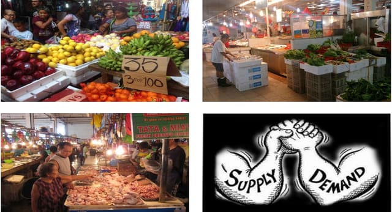
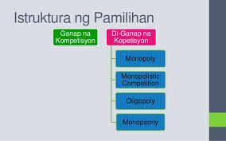

Lesson 5 - Iba't-ibang Estraktura ng Pamilihan
- Iba’t Ibang Estruktura ng Pamilihan (Market Structures)
- Ang estruktura ng pamilihan ay tumutukoy sa uri o kalagayan ng kompetisyon sa pagitan ng mga negosyante o prodyuser sa pagbebenta ng produkto o serbisyo. Ipinapakita nito kung gaano karami ang nagtitinda, gaano kalaya ang pagpasok sa negosyo, at kung paano nabubuo ang presyo sa merkado.

- Ganap na Kompetisyon (Perfect Competition)
- - Uri ng pamilihan kung saan maraming nagtitinda at mamimili ng magkakatulad na produkto.
- - Walang sinuman ang may kontrol sa presyo (price taker).
- - Madaling pumasok at lumabas sa negosyo.
- - Pare-pareho ang kalidad ng produkto.
- - Halimbawa: Pamilihan ng palay, gulay, at prutas sa palengke.

- Di-Ganap na Kompetisyon (Imperfect Competition)
- - Ang di-ganap na kompetisyon ay uri ng pamilihan kung saan hindi ganap ang pagiging patas ng kumpetisyon sa pagitan ng mga nagtitinda o prodyuser. Ibig sabihin, may kontrol sa presyo, kalidad, o dami ng produkto ang ilang kompanya o negosyante. Hindi pare-pareho ang produkto, at madalas ay may mga hadlang sa pagpasok ng bagong kalahok sa merkado.
- 1. Monopolyo (Monopoly)
- - Uri ng pamilihan kung saan iisa lamang ang prodyuser o nagtitinda ng isang produkto o serbisyo.
- - May ganap na kontrol sa presyo (price maker).
- - Walang malapit na kapalit ang produkto.
- - Mahirap pumasok ang bagong negosyante sa merkado.
- - Halimbawa: Meralco (kuryente), Maynilad (tubig).
- 2. Monopolistikong Kompetisyon (Monopolistic Competition)
- - Pamilihan kung saan maraming nagtitinda ng magkakahawig ngunit hindi pareho na produkto.
- - May bahagyang kontrol sa presyo.
- - Madaling pumasok at lumabas sa pamilihan.
- - May product differentiation (pagkakaiba ng tatak, kalidad, o disenyo).
- - Halimbawa: Mga tindahan ng damit, fast food chains (Jollibee, McDonald’s).
- 3. Oligopolyo (Oligopoly)
- - Uri ng pamilihan na binubuo lamang ng iilang malalaking kompanya na may kontrol sa presyo at dami ng produkto.
- - May limitadong bilang ng nagtitinda.
- - Ang presyo ay madalas na nakabatay sa kilos ng ibang kompanya.
- - May malaking puhunan na kailangan upang makapasok sa merkado.
- - Halimbawa: Mga kumpanya ng gasolina (Shell, Petron, Caltex), industriya ng telecommunication (Globe, Smart).
- 4. Monopsonyo (Monopsony)
- - Uri ng pamilihan kung saan iisa lamang ang mamimili ngunit maraming nagbebenta.
- - Ang mamimili ang may kontrol sa presyo.
- - Karaniwang makikita sa pamilihan ng paggawa o labor market..
- - Halimbawa: Isang malaking kumpanya na tanging bumibili ng serbisyo ng manggagawa sa isang lugar.
< back to the AP home page